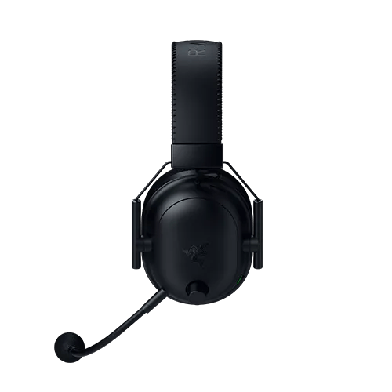
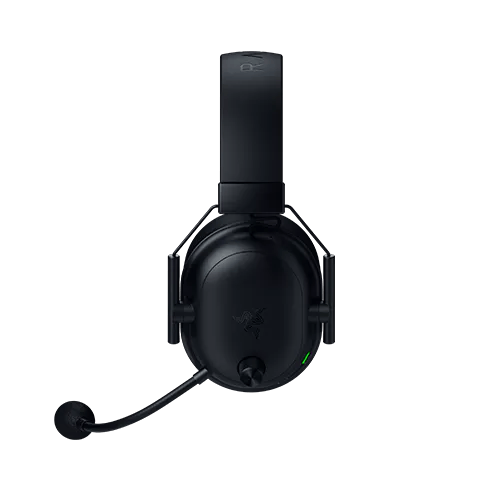
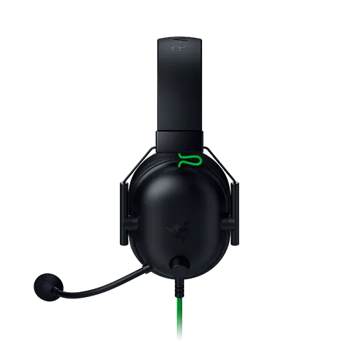

Headset
RAZER BLACKSHARK V2
Som imersivo, conforto extremo e qualidade lendária da Razer.
Som imersivo, conforto extremo e qualidade lendária da Razer.
Mergulhe no som dos esports com o Razer BlackShark V2 X USB, um headset para esports que representa uma ameaça tripla, formada por um áudio incrível, uma nitidez vocal superior e um excelente isolamento sonoro. Armado com um microfone atualizado com cancelamento de ruídos e drivers de áudio de qualidade avançada, seu jogo competitivo está destinado a atingir um nível profissional.
Aumente sua atenção durante as partidas e não deixe nada escapar aos seus ouvidos com um áudio espacial preciso, permitindo que você identifique de forma intuitiva de onde vem cada som.
*Disponível apenas para Windows 10 de 64 bits.Este headset leve para Esports usa um conector de 3,5 mm e funciona em todas as plataformas populares, permitindo que você possa competir em PC, Mac, PS4, Xbox One, Nintendo Switch e dispositivos móveis*.
*Dispositivos móveis com porta de 3,5 mm disponível|  |  |  | ||
|---|---|---|---|---|
| Razer BlackShark V2 Pro | Razer BlackShark V2 HyperSpeed | Razer BlackShark V2 X USB | Razer BlackShark V2 X | |
| DRIVERS | Drivers Razer™ TriForce Titanium de 50 mm | Drivers Razer™ TriForce Titanium de 50 mm | Drivers Razer™ TriForce de 50 mm | Drivers Razer™ TriForce de 50 mm |
| MICROFONE | Microfone Razer™ HyperClear de Banda Super Ampla removível | Microfone Razer™ HyperClear de Banda Super Ampla flexível | Microfone fixo Razer™ HyperClear com cancelamento de ruídos | Microfone cardioide Razer™ HyperClear fixo |
| SOM SURROUND | THX Spatial Audio | THX Spatial Audio | Som 7.1 Surround | Som 7.1 Surround |
| CONECTIVIDADE | Tecnologia Razer™ HyperSpeed Wireless (2,4 GHz) + Bluetooth 5.2 | Sem fio: HyperSpeed Wireless (2,4 GHz) + Bluetooth 5.2 Com fio: USB Tipo A |
USB Tipo A | 3,5 mm analógico |
| DURAÇÃO DA BATERIA | Até 70 horas | Até 70 horas | – | – |
| PESO | 320 g | 280 g | 240 g | 240 g |
O Razer BlackShark V2 X vem com um Microfone cardioide Razer HyperClear dobrável, ajustado para ter uma área mais concentrada de captação de voz.
Para usar o microfone, dobre-o até que ele esteja paralelo à sua boca. Certifique-se de que o diafragma do microfone esteja voltado para a frente e a abertura de ventilação para o lado oposto à sua boca. Para uma maior conveniência, colocamos um pequeno ícone de microfone no lado do diafragma, assim, você pode distinguir com facilidade o lado que deve estar voltado para sua boca.
Sim, o Razer BlackShark V2 X dispõe de som 7.1 surround* para uma maior imersão na música, nos filmes e nos jogos.
*Disponível apenas para Windows 10 de 64 bits.
Não, o Razer BlackShark V2 X não dispõe de iluminação Razer Chroma RGB.
O Razer BlackShark V2 X está disponível em Preto Clássico e Verde Razer.
O Razer BlackShark V2 X pode ser conectado com seu conector de áudio de 3,5 mm.
VÁRIOS MODELOS E CORES DISPONÍVEIS
Escolha entre diferentes versões do Razer BlackShark, com design e recursos otimizados para cada estilo de jogo. Do casual ao competitivo, existe um modelo ideal para você.